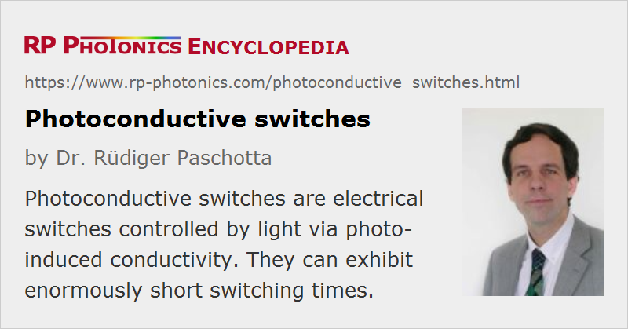

Photoconductive Switches
Definition: electric switches controlled by light via photo-induced conductivity
German: photoleitende Schalter
Categories: photonic devices, optoelectronics
How to cite the article; suggest additional literature
Author: Dr. Rüdiger Paschotta
A photoconductive switch is an electrical switch which is based on the photoconductivity of a material, i.e. an increase in its electrical conductance as a consequence of irradiation with light. In nearly all cases, one uses a semiconductor material, where the absorbed light (with a photon energy above the band gap energy) generates free carriers, which then contribute to the conductivity. Frequently used materials are chromium-doped gallium arsenide (Cr-GaAs), low-temperature grown gallium arsenide (LT-GaAs), indium phosphide (InP), amorphous silicon, and silicon on sapphire (SoS). In order to reduce the recovery time of the switch (determined by the lifetime of photoexcited carriers), one typically uses low-temperature growth (often followed by rapid thermal annealing), some doping (e.g. chromium in GaAs), or ion bombardment for producing crystal defects. Apart from the recovery time, important criteria are the bandgap energy, dark resistivity, and electrical breakdown resistance.
There are different designs of photoconductive switches:
- bulk devices several millimeters or even centimeters long with electrical contacts on the end faces, used for switching very high voltages (sometimes above 100 kV)
- devices with a small gap in a microstrip; the gap can be straight or interdigitated and has a width between a few microns and tens of microns; for low-power applications with very high speed
- sliding contact devices for the highest speed, where a point between the two parallel strips of a coplanar stripline is illuminated
All such devices are of the metal–semiconductor–metal (MSM) type.
Photoconductive switches are used for various purposes:
- for photoconductive sampling, particularly for testing of high-speed integrated electronic circuits (even before dicing the wafer, because electrical contacts are required only for DC and low-frequency signals)
- for the generation of terahertz pulses
- for the generation of microwaves and millimeter waves via direct DC to RF conversion, in both continuous-wave and pulsed mode (e.g. with a frozen waveform generator)
- as high-speed photodetectors in optical fiber communications
- in very fast analog-to-digital converters
Questions and Comments from Users
Here you can submit questions and comments. As far as they get accepted by the author, they will appear above this paragraph together with the author’s answer. The author will decide on acceptance based on certain criteria. Essentially, the issue must be of sufficiently broad interest.
Please do not enter personal data here; we would otherwise delete it soon. (See also our privacy declaration.) If you wish to receive personal feedback or consultancy from the author, please contact him e.g. via e-mail.
By submitting the information, you give your consent to the potential publication of your inputs on our website according to our rules. (If you later retract your consent, we will delete those inputs.) As your inputs are first reviewed by the author, they may be published with some delay.
Bibliography
| [1] | F. W. Smith et al., “Picosecond GaAs-based photoconductive optoelectronic detectors”, Appl. Phys. Lett. 54 (10), 890 (1989), doi:10.1063/1.100800 |
| [2] | D. Krokel et al., “Subpicosecond electrical pulse generation using photoconductive switches with long carrier lifetimes”, Appl. Phys. Lett. 54, 1046 (1989), doi:10.1063/1.100792 |
| [3] | C. H. Lee, “Picosecond optics and microwave technology”, IEEE Trans. Microwave Theory Technol. 38 (5), 596 (1990), doi:10.1109/22.54928 |
See also: photoconductive sampling, electro-optic sampling
and other articles in the categories photonic devices, optoelectronics
|  |
If you like this page, please share the link with your friends and colleagues, e.g. via social media:
These sharing buttons are implemented in a privacy-friendly way!